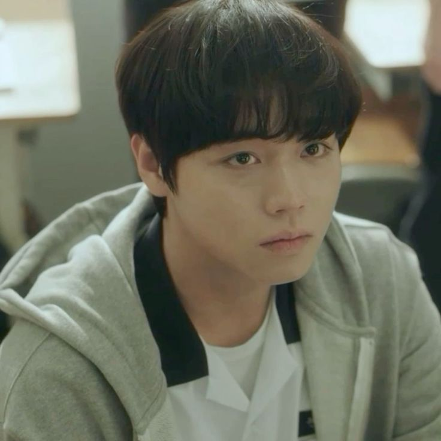
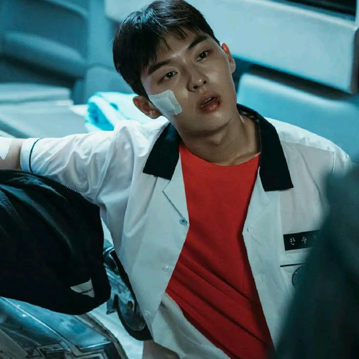
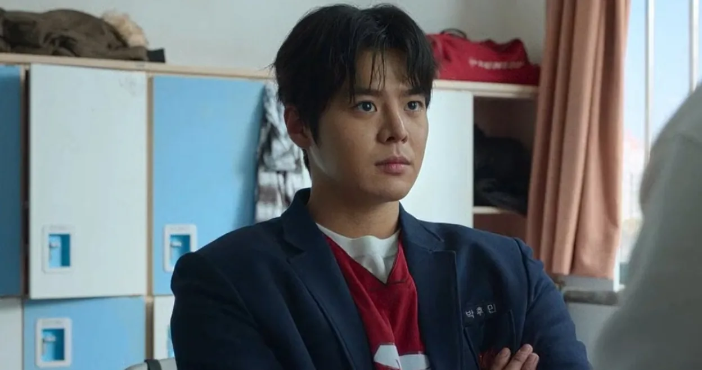

Lista de personajes
Yeon Si Eun
Yeon Si-eun es introvertido y suele centrarse en el estudio y la búsqueda de conocimiento. Si bien carece de fuerza física, utiliza tácticas psicológicas para defenderse de los acosadores. Su personalidad demuestra resiliencia, con momentos de vulnerabilidad, especialmente cuando se le lleva al límite.
Ahn su-ho
Ahn Su-ho fue criado por su abuela, quien sigue siendo una de las figuras más importantes de su vida. Le prometió asistir a la escuela todos los días, por lo que, a pesar de no tener aspiraciones académicas, mantiene una asistencia perfecta. Fuera de la escuela, trabaja como repartidor en el restaurante de su familia, sacrificando el descanso y el ocio para ayudar. Su vida familiar es modesta pero llena de amor, y sus responsabilidades le han hecho madurar más allá de su edad. Las habilidades de combate de Su-ho provienen de su pasado como aprendiz de artes marciales mixtas, aunque abandonó el deporte debido a un incidente que lo desilusionó. Sin embargo, esas habilidades permanecen y lo convierten en una fuerza poderosa ante la violencia en la escuela. A pesar de sus habilidades, Su-ho no busca peleas por estatus ni poder; en cambio, solo interviene cuando presencia una injusticia o alguien está siendo lastimado. Su fuerza se convierte en un escudo para aquellos más débiles que él, especialmente sus amigos.
Baku
Baku (Park Hu-min) en Weak Hero es el líder del club de baloncesto y uno de los chicos más fuertes de la escuela Eunjang, con una reputación de gran luchador. A pesar de su poder y su intento por mantener la paz en la escuela, sus conflictos pasados con el líder de la pandilla Unión, Na Baek-jin, provocan violencia en Eunjang. Baku es un personaje con sentido de la justicia, honesto y noble, aunque su complicado pasado familiar influye en su comportamiento y decisiones.